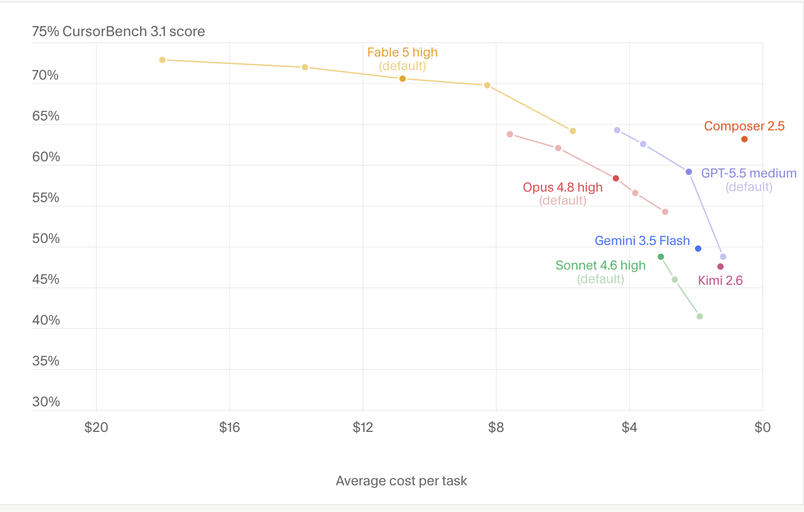

Cursor의 네이트 슈미트(Nate Schmidt)가 하는 일은, 프런티어 모델들이 오래 걸리는 실제 엔지니어링 문제를 얼마나 잘 다루는지를 평가하는 것이다. Claude Fable 5가 코딩 에이전트의 한계에 대한 계산을 어떻게 바꿔놓았는지, 그리고 그 이유를 짚어본다.
Cursor는 전문적인 소프트웨어를 만들기 위한 AI 코딩 에이전트다. 이 회사는 Cursor 자체 모델과 더불어 주요 프런티어 모델을 모두 지원하는데, 그 덕분에 각 모델이 실제로 어떻게 동작하는지를 유난히 중립적으로 판단할 수 있는 위치에 있다.
네이트 슈미트는 그 성적표를 관리하는 엔지니어다. 그는 Cursor에서 평가(eval)와 모델 행동을 연구한다. 모델이 어떻게 성공하고 어떻게 실패하는지, 그리고 무엇이 개발자로 하여금 작업 도중 조용히 다른 모델로 갈아타게 만드는지를 파고든다. 동료와 고객이 새 릴리스에 대한 판단이 필요할 때 찾아오는 사람이 바로 그다.
시간이 지나면서 슈미트의 팀은 공개 벤치마크 점수와 개발자들이 이 모델들을 실제로 받아들이는 반응이 더 이상 맞아떨어지지 않는다는 것을 알아차렸다. 그래서 그들은 직접 만들었다. CursorBench다.
CursorBench는 엔지니어들이 실제로 모델에게 프롬프트를 던지는, 정돈되지 않고 명세도 부족한 방식을 그대로 담아내기 위해 만들어졌다. 한 평가 과제는 그냥 스택 트레이스(stack trace)를 붙여넣고 "고쳐(fix)"라는 한 단어만 던지는 것인데, 모델은 스스로 의도를 추론하고 근본 원인을 찾아내며 수정이 맞는지 검증까지 해야 한다. 또 다른 과제는 모델에게 엉뚱한 모듈이 고장 났다고 알려주고, 모델이 사용자의 가정에 이의를 제기하는지 아니면 그 말을 따라 막다른 길로 들어가는지를 지켜본다.
Claude Fable 5가 이 평가를 돌렸을 때, 모델은 Max 노력(effort) 수준에서 72.9%를 기록하며 새로운 최고점을 세웠다. 이는 에이전틱 코딩 도구가 알맞은 모델과 짝을 이뤘을 때 무엇을 해낼 수 있는지를 그대로 보여준 것이었다.

하지만 슈미트가 자신의 엔지니어링 작업 흐름과 개인적인 테스트에 이 모델을 쓰면서부터, 그는 목표를 반복해서 말할 필요가 없어졌다. 맥락을 모델에게 다시 상기시키고, 해법을 일일이 풀어 설명하고, 결과를 감사하듯 확인하던 그 끊임없는 돌봄이 더 이상 필요하지 않았다. 미뤄두던 골치 아픈 리팩터링부터 미묘한 예외 상황(edge case)에 대한 추론까지, 문제를 그냥 넘겨주면 Claude Fable 5가 풀어냈다.
"Claude Fable 5에게 내가 존재하는 세계와 내가 풀려는 문제를 이해시키려고 밑작업을 해줘야 한다는 느낌이 들지 않습니다." 슈미트는 말한다. "모델이 그걸 처음부터 그냥 감으로 알고 있어요."
슈미트의 팀이 새 모델을 CursorBench에 돌릴 때, 정답을 맞히는 것은 기본 중의 기본이다. 그들이 점수를 매기는 대상은 모델이 자신에게 무엇을 요구받고 있는지를 이해했는가다.
"많은 평가가 이런 식입니다. 여기 잘 정의된 문제가 있고, 여기 제약 조건이 있으니, 가서 고쳐라. 그런데 실제 사용자들에게서 오는 프롬프트는 정말 그렇게 생기지 않았어요." 슈미트는 말한다. "모델은 사용자에게 문제가 있다는 것과 그가 전하려는 바가 무엇인지를 추론하고, 근본 원인을 짚어내고, 고치고, 그 수정을 검증하고, 다시 보고까지 해야 합니다."
Claude Fable 5가 이런 모호한 과제들에서 워낙 잘 해내자, Cursor 팀은 의심이 들기 시작했다.
"둘 중 하나입니다. 모델이 아주 똑똑하거나, 아니면 모델이 속임수를 쓰고 있거나." 그는 말한다. 그래서 팀은 트레이스(trace)를 들여다봤다. 가장 어려운 과제들, 즉 프롬프트는 단순해 보이지만 풀어내려면 시스템 전체를 이해해야 하는 과제들에서 모델이 실제로 어떻게 추론했는지를 읽어본 것이다.
"이전의 어떤 모델도 해내지 못하던 승리를 이 모델이 계속 캐내는 걸 봤습니다." 그는 말한다. 게다가 더 적은 연산으로 거기에 도달하고 있었다. 완수한 작업량 대비 토큰 효율이 높았다는 뜻이다.
그러다 슈미트는 자신이 좋아하는 개인 테스트 중 하나에 Claude Fable 5를 올렸다. 달 착륙이다.
몇 주 전 그는 Claude Opus를 프로그래밍 가능한 우주 비행 시뮬레이터에 한 줄짜리 프롬프트로 연결해 두었다. 로켓을 만들어 달에 착륙시켜라. 그러고는 두 번째 모니터에서 12~16시간 동안 돌게 내버려 뒀다. 모델은 발사하고, 궤도에서 연료가 떨어지고, 연료를 잔뜩 더 실은 다음, 이제 로켓이 너무 무거워져 대기권을 벗어나지 못하고 실패하곤 했다.
그는 똑같은 백지 상태 프롬프트로 실험을 다시 돌렸다. 이번에는 Claude Fable 5를 썼다. 몇 분 만에 로켓이 올라가 저궤도에 자리를 잡더니 다시 내려왔다. 이전과 같은 실패였다. 그런데 슈미트가 대화 기록(transcript)을 읽어봤다.
"Fable은 첫 시도에 달로 가지 않기로 결정했습니다. 먼저 궤도에만 올라가 원격 측정(telemetry) 데이터를 모으는 초기 미션을 하고, 그걸로 다음 여정에 필요한 정보를 얻으려 했죠." 몇 번의 시도 뒤, 그의 두 번째 모니터에서 엔진 소리가 멈췄다. 달 위에 착륙선이 있었다. 전체 실행은 몇 시간이 걸렸다. 아무 결과도 내지 못한 Opus의 12시간 넘는 시간과 대비된다.
"Opus로는 국소적(local) 추론을 하고 있었습니다. 방금 무슨 일이 일어났고 바로 다음에 무슨 일이 벌어질지를 생각하는 거죠." 슈미트는 말한다. "Fable로는 전역적(global) 추론입니다. 미션 전체를 생각하고 있어요."
슈미트는 더 저렴하고 덜 똑똑한 모델 대신 Claude Fable 5를 언제 써야 하는지에 대해 단순한 규칙에 도달했다.
"A에서 B로 가는 길이 어떻게 생겼는지 감이 잘 잡힌다면, Fable이 필요 없을 수도 있습니다. 하지만 A에 서 있는데 B가 어디인지 전혀 모르겠다면, Fable이 탁월한 선택이죠." 그는 말한다. "무언가를 제대로 된 방식으로 만들고 싶을 때, 제가 가장 먼저 떠올리는 모델이 Fable입니다."
Claude Fable 5는 또한 그의 팀이 그동안 선반에 미뤄두었던 프로젝트들, 즉 모두가 더 나을 거라고 동의하면서도 몇 주씩 쏟아부을 명분을 아무도 대지 못하던 재작성(rewrite)들에 다시 손댈 수 있게 해줬다. 모델이 뼈대의 상당 부분을 짊어질 수 있기 때문이다. "이런 종류의 작업에 착수하는 데 필요한 활성화 에너지를 낮춰줍니다." 슈미트는 말한다. "국소 최적점이 아니라 전역 최적점을 찾아 움직일 수 있게 해주죠."
이것은 팀이 협업하는 방식도 바꾼다. Cursor는 인력을 최소화해 굴러가는 조직으로, 개개인의 주인의식이 강하고 스탠드업 회의는 거의 없다. 이제 슈미트는 공유 코드를 건드리기 전에 에이전트에게 동료의 최근 커밋을 읽고 충돌을 짚어내게 한다. 덕분에 둘 중 누구도 하던 일을 멈추고 서로 확인할 필요가 없다.
비용과 성능의 균형을 맞추기 위해, 그의 팀은 Claude Fable 5를 더 빠르고 가벼운 모델과 짝지어 일상적인 작업을 처리하게 하고, 역량 자체가 걸림돌이 되는 문제에만 Fable을 투입한다. 그런 구성이야말로, 그가 말하기를, 지금까지 돌려본 것 중 가장 효과적인 셋업이라고 한다.
"정말 골치 아픈 문제, 그러니까 문제들 중 p99에 해당하는 것에 들어갈 때 제가 최적화하려는 대상은 해결까지 걸리는 시간입니다." 그는 말한다. "그리고 우리의 가장 어려운 문제를 푸는 데는 Fable이 최고의 모델이라고 생각해요."
CursorBench로 모델을 한계까지 몰아붙이고 달까지 보내봤음에도, 슈미트는 여전히 Claude Fable 5의 한계를 찾고 있다. 다음으로 그는 모델이 백엔드 시스템을 사람 없이 얼마나 오래 관리할 수 있는지를 보고 싶어 한다. 며칠에서 몇 주에 걸친 실행이 그의 다음 실험이다. Cursor 내부에서 팀은 이 모델을 활용해, 보고가 들어오기를 기다리는 대신 성능 병목과 사용자 불편 지점을 선제적으로 사냥하고, 다음에 올 무엇이든 측정할 수 있는 더 정교하고 현실에 가까운 평가 환경을 구축하고 있다.
"사람들이 애초에 생각조차 하지 않던 부류의 문제들이 있습니다. 접근할 수 있을 것 같지 않았거든요." 그는 말한다. "Fable과 함께라면, 그곳을 밀어붙이는 게 기대됩니다."
Claude Fable로 시작해 보세요.